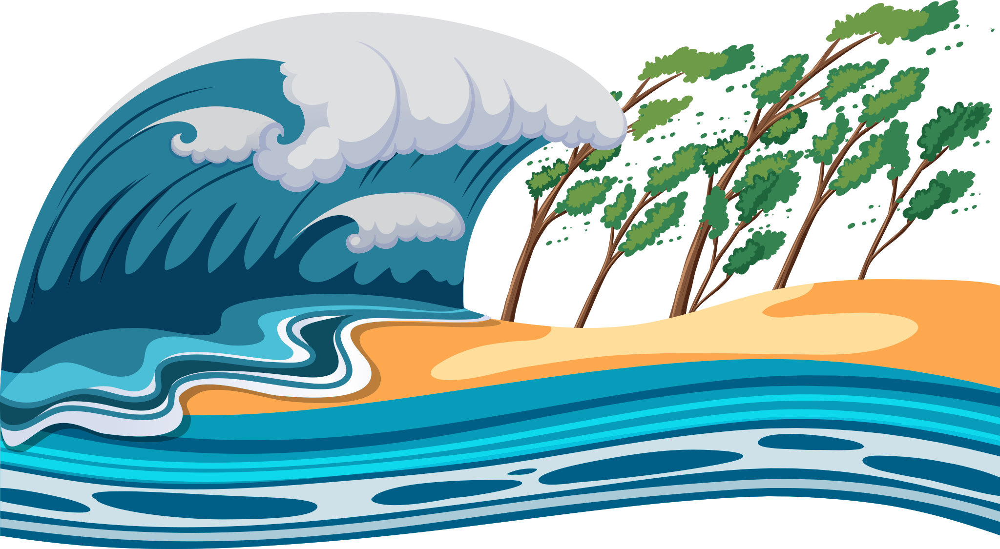

This is the STEM fair 2026-2027, here is where I write all the hypothesis, background searches and introduction.
This is the introduction. The purposes of doing this is to understand better about how does tsunami works. As we have fascinate as for a long time, but we haven’t understand much about it. So, we’ll try to understand, and solve the misconception about tsunamis.
The project is mainly for us to understand more about our needs for understanding the tsunami functionality. We heard that tsunami is caused by earthquakes, of course, but haven’t understand much. So with this project, we can understand more about tsunamis.
The hypothesis is it is caused by an earthquake strong enough to start a tsunami.
On the website: https://www.usgs.gov/faqs/what-it-about-earthquake-causes-a-tsunami, we learned that tsunami was caused by an earthquake mainly at magnitude 6.5 or greater. Where below magnitude 6.5, it’ll be unlikely to cause a tsunami. Between magnitude 6.5 and 7.5, it’ll not cause much destruction, but up that , then it’ll be destructive. But its just one factor to it, as there're lot more factor (water depth, etc...) to making the tsunami.
More materials:
Offical website source
Offical plan that I thought about